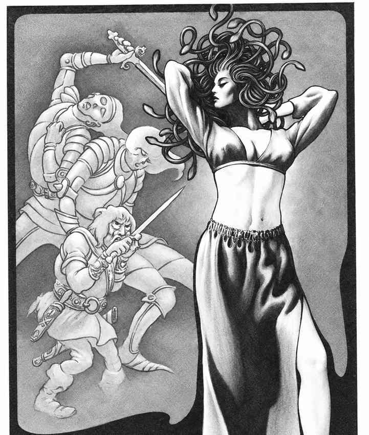

囚禁半位面 · The Demi-Plane of Imprisonment
囚禁半位面只在传奇人物的传说中若隐若现。传说中，一个黑暗、混沌且超越九层地狱的邪恶力量曾统治这里。各阵营伟大力量的先祖击败了它及其仆从，把它们分割成巨块物质，卷入负物质位面；但毁灭并不彻底。传说在有知生物能够抵达的领域之外，仍有巨大的半位面由那些不可修复的邪恶生物统治。它的帷幕颜色无人记录；不要调查任何不符合已知颜色的雾状帷幕。

上一节：电磁半位面 · The Demi-Plane of Electro-Magnetism
下一节：内层位面 · The Inner Planes